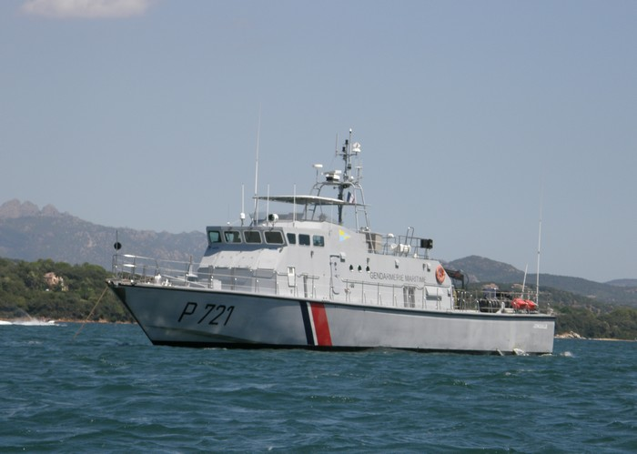

Patrouilleur de la gendarmerie maritime P721 "Jonquille"

Missions :
Le patrouilleur a pour mission : - La police des pêches (protection de la ressource halieutique: contrôle des restaurants, poissonneries, criées, navires de pêche...), - La police des mer (contrôle des navires, surveillance en mer...), - L'Action de l'État en Mer (AEM), - La protection du trafic maritime, - La surveillance côtière et maritime. - La participation : - aux exercices avec la Marine Nationale (blanchiment de zones, sécurité de sites sensibles), - aux opérations de secours en mer, - à la défense maritime du territoire.
Moyens :
- Mobilité : Moyens nautiques : 1 Patrouilleur de 32 mètres avec 3 moteurs pour un total de 4000 Cv (P721 "Jonquille"), 1 Embarcation semi-rigide sur le patrouilleur. - Divers : Matériels de navigation (cartes, boussoles...), Matériels de plonger, Lance a eau, Matériels de combat.
Effectifs :
- 20 personnels : 3 Officiers, 13 Sous-officiers, 2 Gendarmes adjoints volontaires (GAV) - Police Judiciaire : OPJ : 8 personnels. Certains sous-officiers ont les spécialités/formations suivantes : - Électricien, - Mécanicien, - Chef de quart.